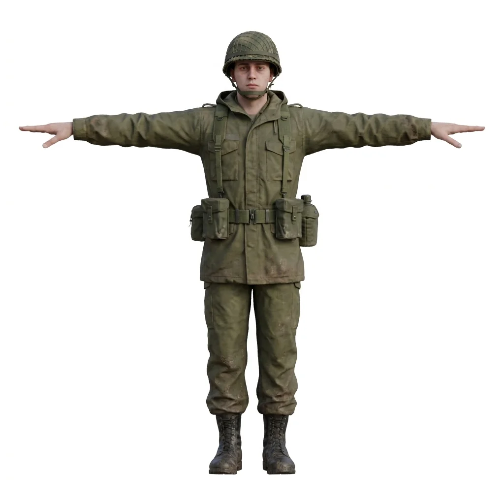
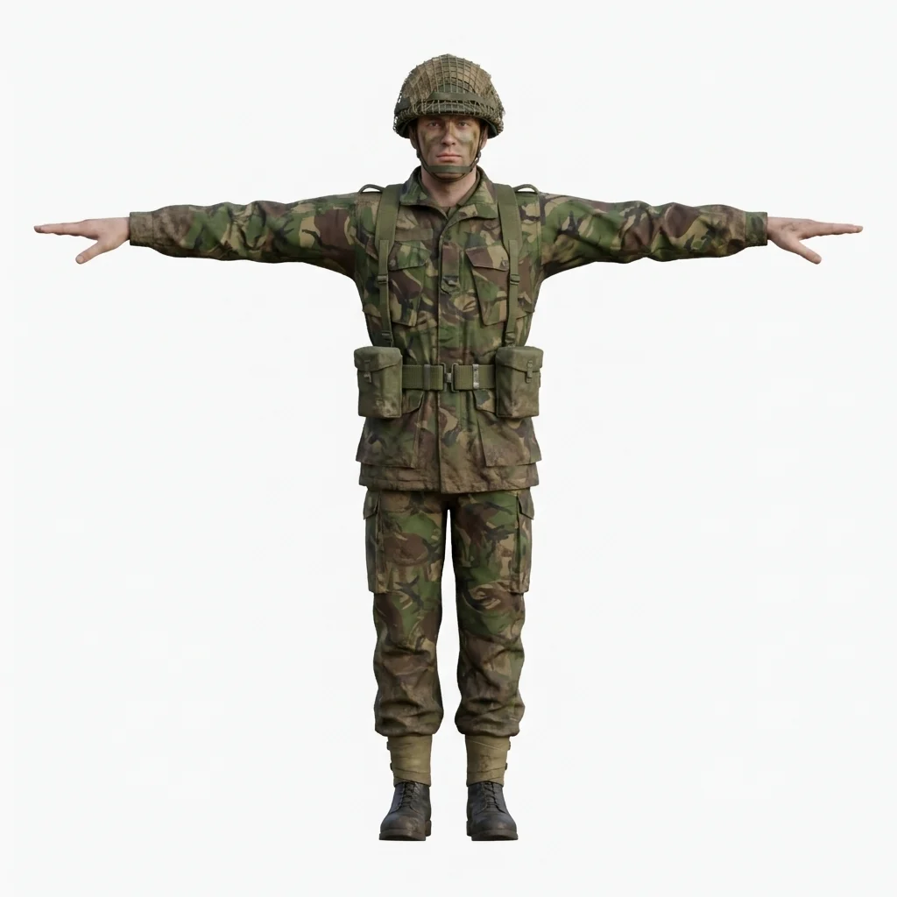
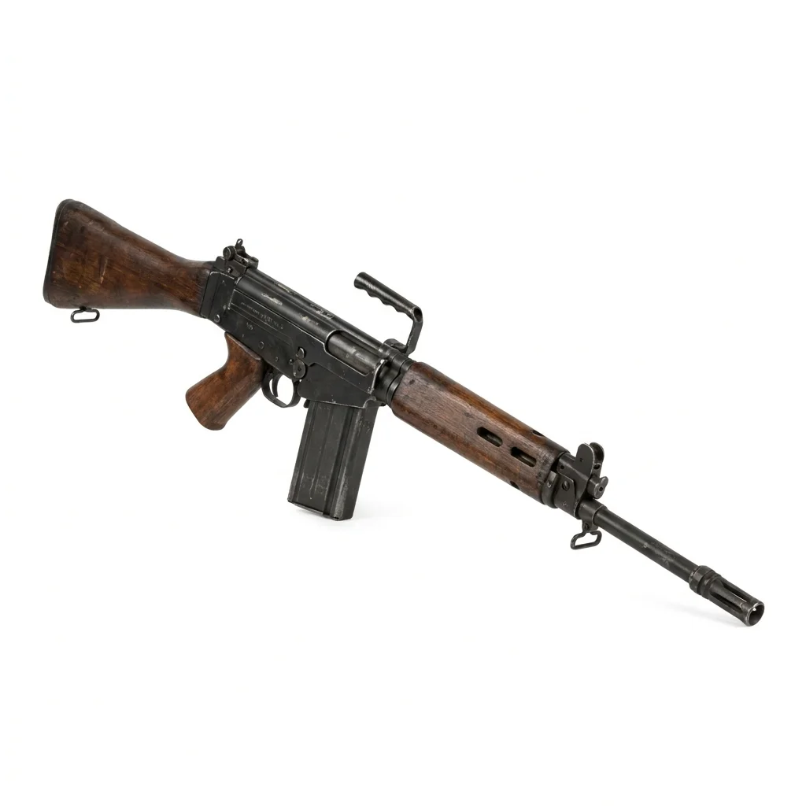
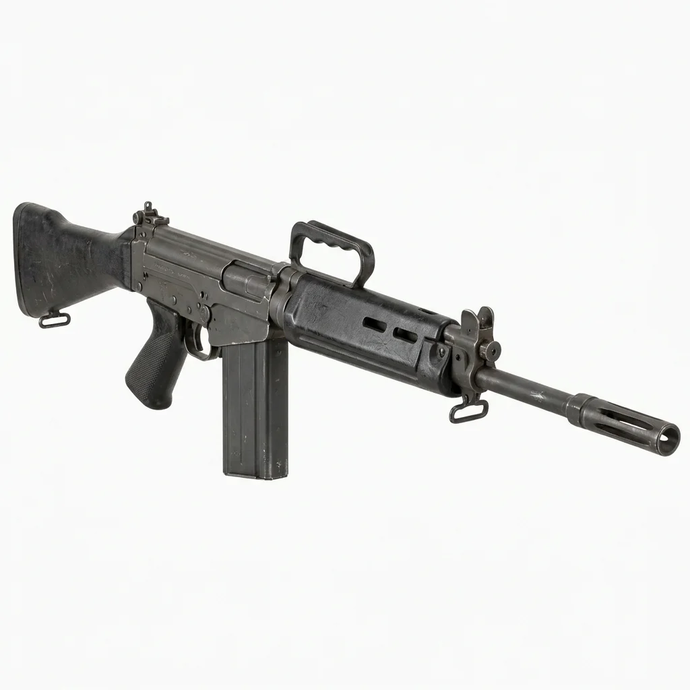
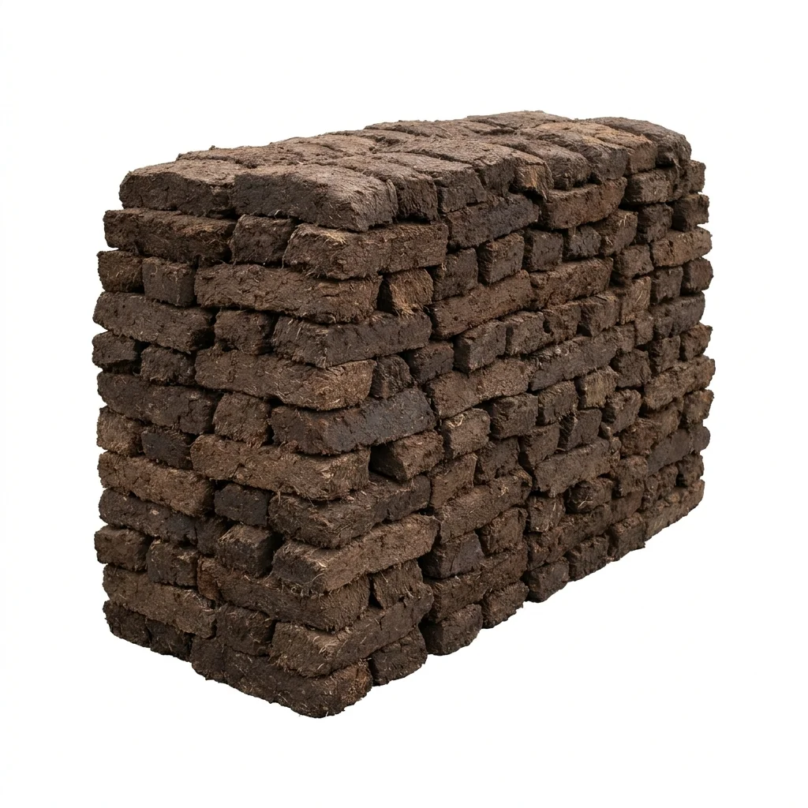
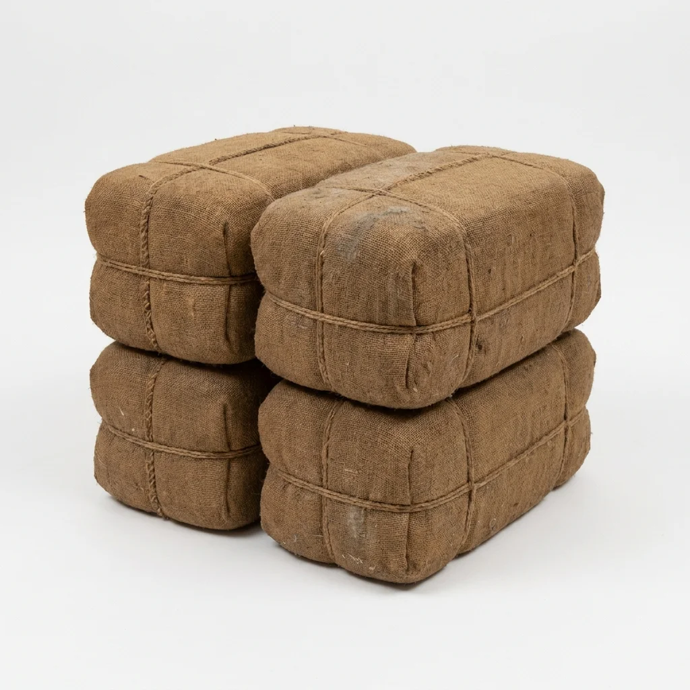
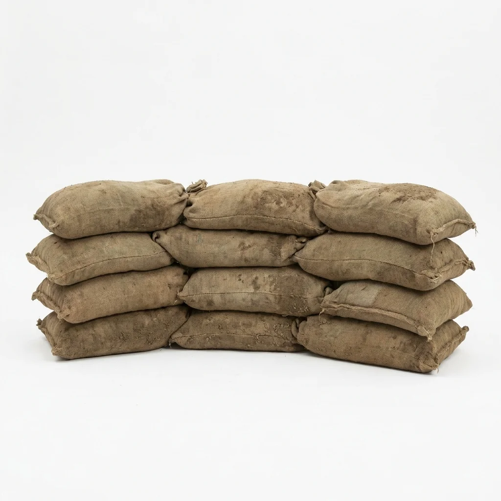
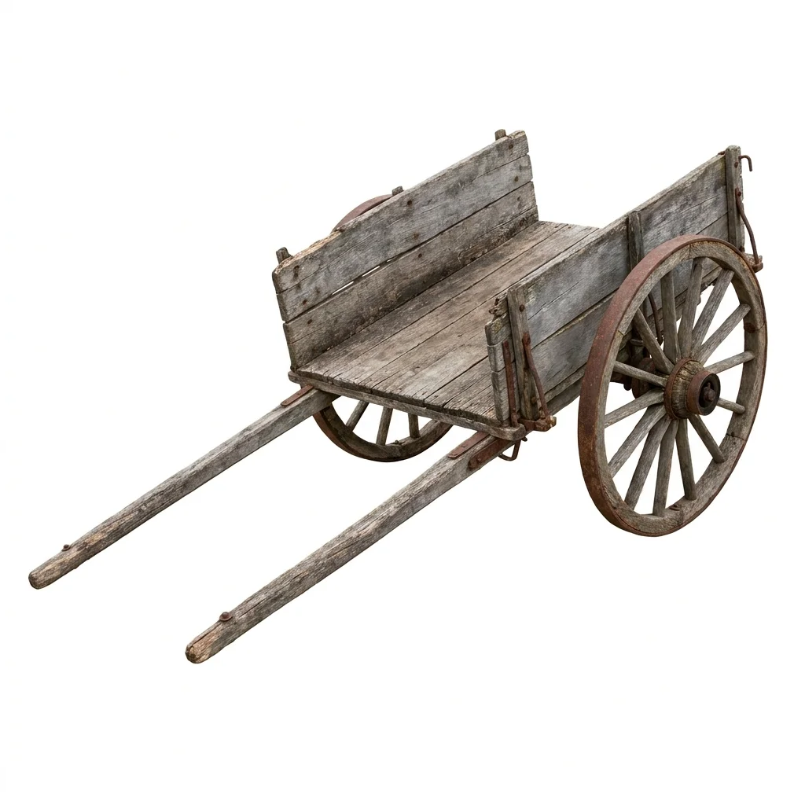
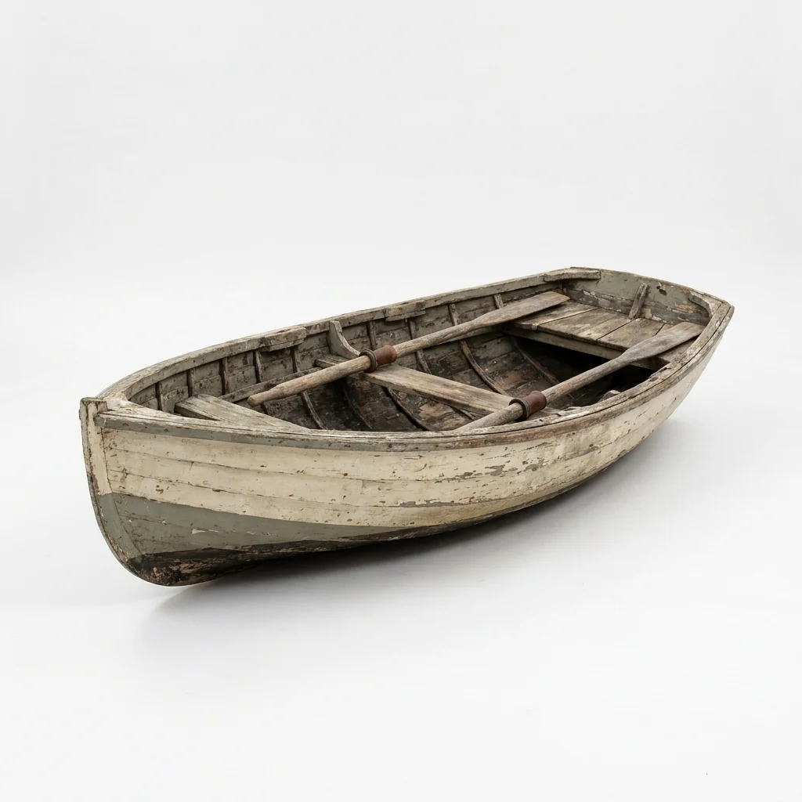

Proyecto · Godot 4.7.2 · v0.03 beta
Línea de Fuego: Malvinas 1982
FPS táctico multijugador 6v6 / 9v9 con el ritmo competitivo de Call of Duty 2, ambientado en la Guerra de Malvinas. "Partidas cortas, letales y justas en el barro, la turba y la piedra de Malvinas."
H2Hito cumplido: ronda de ByD con bots
88 MBRAM del servidor con 18 jugadores (meta < 100 MB)
1 mapaPradera del Ganso jugable
Dónde está todo
- Proyecto Godot:
G:\Proyectos GODOT\Linea de Fuego Malvinas - Repositorio: github.com/mosquito21/Linea-de-fuego (tags v0.01 a v0.03 beta)
- Diseño completo:
docs/DISENO.md(GDD v0.5) · movimiento:docs/COD2_MOVIMIENTO.md· estilo:docs/ESTILO_VISUAL.md - Ficha del proyecto: projects/linea-de-fuego-malvinas
Pilares
| Pilar | En la práctica |
|---|---|
| Letalidad CoD 2 | Fusiles de 2 tiros al torso, 1 a la cabeza. Sin habilidades. |
| Infantería pesada | Sin sprint infinito ni bunny hop: gana la posición y la puntería. |
| Justicia competitiva | Servidor autoritativo, compensación de lag, los mismos números para todos. |
| Corre en cualquier PC | 60 FPS en GPUs de 2012, renderer Compatibilidad, servidor de menos de 100 MB. |
| Ambientación seria | Armas y uniformes de 1982, sin gore y con la misma dignidad para los dos bandos. |
01Soldados
Argentina

Reino Unido

02ArmasImplementadas: FAL, L42A1, Mauser .300 y L1A1
FAL (Argentina)

L1A1 SLR (Reino Unido)

03Mapas
| Mapa | Fecha | Estado |
|---|---|---|
| Pradera del Ganso (Goose Green) | 28/05/1982 | Jugable: 100 × 192 m, tres carriles, primer contacto a los 8,6 s |
| Monte Longdon | 11–12/06/1982 | Diseñado (H5), noche con bengalas |
| Puerto Argentino (Op. Rosario) | 02/04/1982 | Diseñado (H5), urbano, se hace último |
Props de Pradera del Ganso





04Desarrollo
| Hito | Contenido | Estado |
|---|---|---|
| H0 · Esqueleto | Servidor headless en Docker, predicción de movimiento | Listo |
| H1 · Disparo | FAL y L42A1, ADS, hitscan con compensación de lag | Listo |
| H2 · Ronda | Buscar y Destruir, cupos de roles, estadísticas, bots | Listo |
| H3 · Arsenal | Todas las armas, granadas y humo | Pendiente |
| H4 · Arte y rendimiento | Pradera con arte final, presets gráficos | En curso |
| H5 · Más mapas | Monte Longdon y Puerto Argentino | Pendiente |